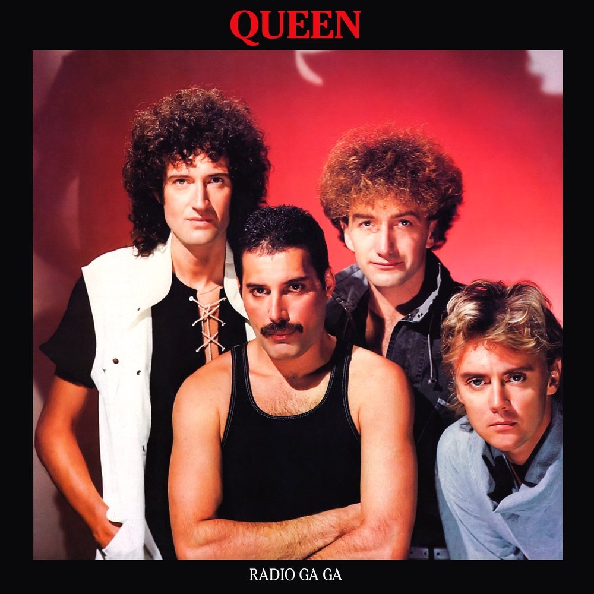

Queen
"Короли стадионного рока"
Жанр:
Рок, Хард-рок, Глэм-рок
Страна:
Великобритания
Годы активности:
1970-настоящее время
Премии:
4 Грэмми, BRIT Awards
Состав:
Фредди Меркьюри, Брайан Мэй, Роджер Тейлор, Джон Дикон
«Чем больше у меня проблем, тем лучше мои песни» Фредди Меркьюри
Биография
Queen - британская рок-группа, добившаяся широчайшей известности в середине 1970-х годов. Одна из наиболее успешных групп в истории мировой музыки, оказавшая огромное влияние на развитие рока.
Группа выпустила пятнадцать студийных альбомов, пять концертных и многочисленные сборники. Широкое признание получили новаторские работы Queen в области звукозаписи и видеоклипов.
Участники группы:
Фредди Меркьюри
Вокал, фортепиано (1970-1991)
Брайан Мэй
Гитара, вокал (1970-наст. время)
Роджер Тейлор
Ударные, вокал (1970-наст. время)
Джон Дикон
Бас-гитара (1971-1997)
Ключевые достижения:
- Более 300 миллионов проданных записей по всему миру
- Включены в Зал славы рок-н-ролла в 2001 году
- Альбом "Greatest Hits" - самый продаваемый в истории Великобритании
- Выступление на Live Aid 1985 года признано величайшим рок-выступлением
- Песня "Bohemian Rhapsody" провела в UK Singles Chart рекордные 9 недель на №1
- Обладатели премии "Brit Award" за выдающийся вклад в музыку
Самые популярные песни
1
Bohemian Rhapsody
A Night at the Opera (1975)
2
We Will Rock You
News of the World (1977)
3
We Are the Champions
News of the World (1977)
4
Another One Bites the Dust
The Game (1980)
5
Don't Stop Me Now
Jazz (1978)
6
Radio Ga Ga
The Works (1984)
7
Somebody to Love
A Day at the Races (1976)
8
I Want to Break Free
The Works (1984)
Легендарное выступление: Live Aid 1985
Песня целиком написана Фредди Меркьюри (кроме гитарного соло Брайана Мэя). Меркьюри представлял себе песню как оперную сюиту, что было необычно для рок-музыки того времени.